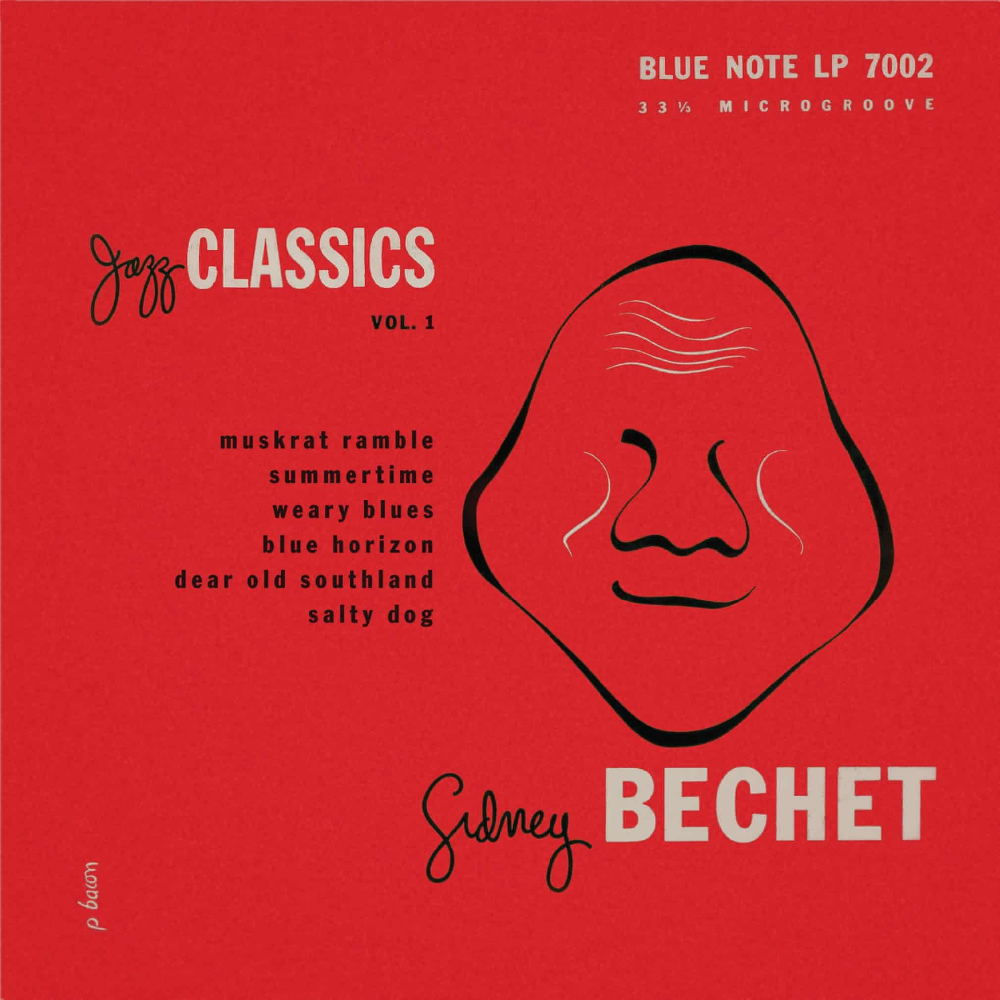

Jazz music is a broad style of music characterized by complex harmony, syncopated rhythms, and a heavy emphasis on improvisation. Black musicians in New Orleans, Louisiana developed the jazz style in the early twentieth century. Long considered one of the musical capitals of the United States, New Orleans fostered a robust ragtime and blues tradition. Early jazz musicians like Jelly Roll Morton and Louis Armstrong built on these blues and ragtime forms and improvised over them, which led to a brand new genre of American music.
